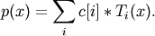

numpy.polynomial.chebyshev.chebroots¶
- numpy.polynomial.chebyshev.chebroots(c)¶
Compute the roots of a Chebyshev series.
Return the roots (a.k.a. “zeros”) of the polynomial

Parameters : c : 1-D array_like
1-D array of coefficients.
Returns : out : ndarray
Array of the roots of the series. If all the roots are real, then out is also real, otherwise it is complex.
See also
polyroots, legroots, lagroots, hermroots, hermeroots
Notes
The root estimates are obtained as the eigenvalues of the companion matrix, Roots far from the origin of the complex plane may have large errors due to the numerical instability of the series for such values. Roots with multiplicity greater than 1 will also show larger errors as the value of the series near such points is relatively insensitive to errors in the roots. Isolated roots near the origin can be improved by a few iterations of Newton’s method.
The Chebyshev series basis polynomials aren’t powers of x so the results of this function may seem unintuitive.
Examples
>>> import numpy.polynomial.chebyshev as cheb >>> cheb.chebroots((-1, 1,-1, 1)) # T3 - T2 + T1 - T0 has real roots array([ -5.00000000e-01, 2.60860684e-17, 1.00000000e+00])

Previous topic
numpy.polynomial.chebyshev.chebgrid3d
Next topic
numpy.polynomial.chebyshev.chebfromroots